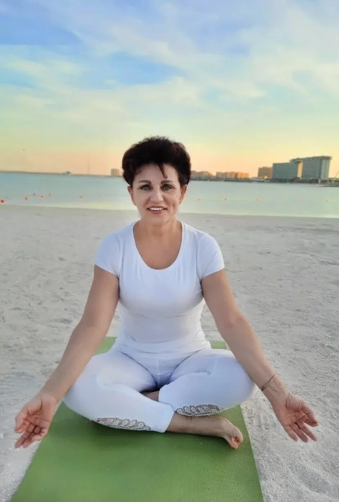
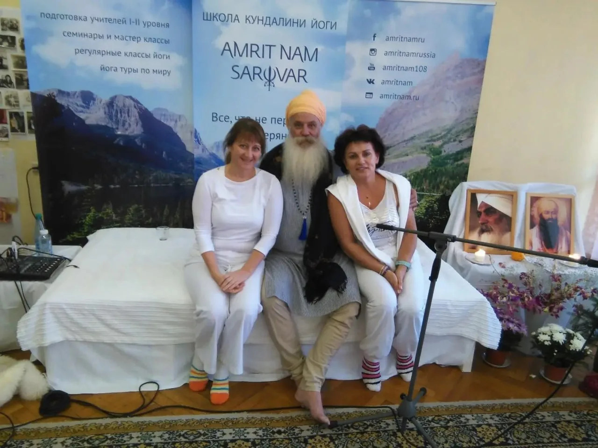
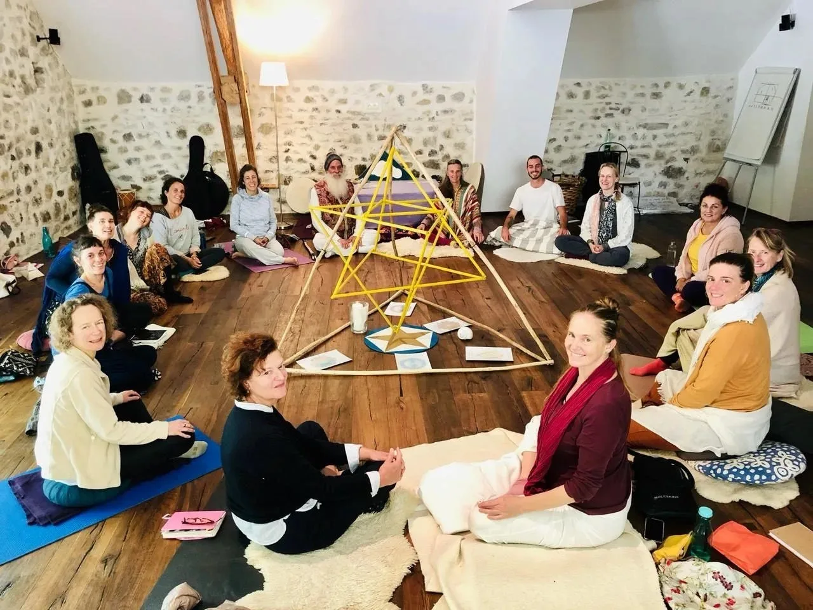
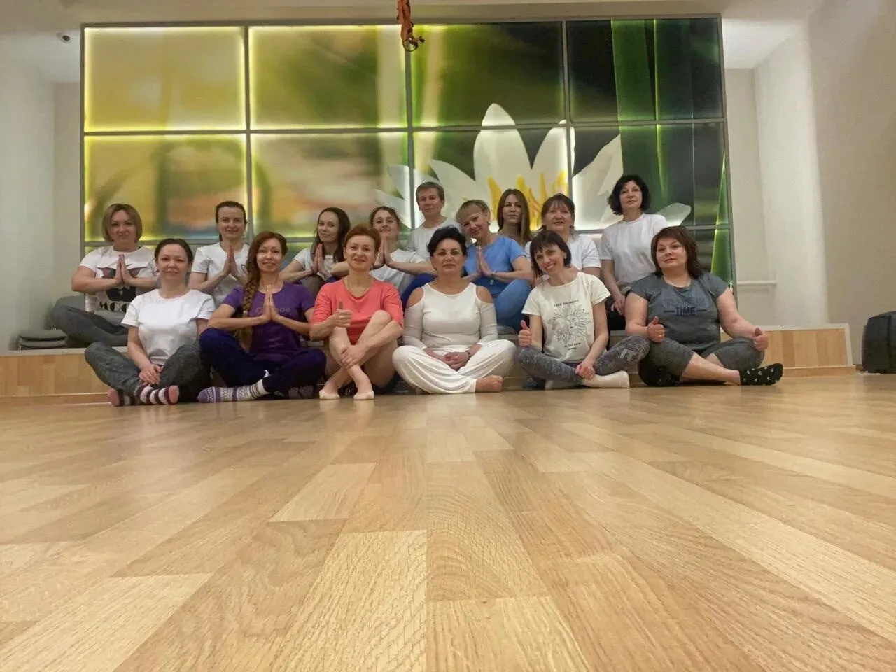

Вардане · Сочи · 9—12 октября 2026
Йога и процветание
Женский ретрит по Кундалини йоге с Атма Бани Каур
Четыре дня у моря, чтобы успокоить ум, вернуть телу лёгкость и сформировать намерение на новый цикл. Начинаем в новолуние.
Это ещё не оплата — сначала разговор с Татьяной.

01Для кого
Время, когда закладывается новое
Новолуние — начало цикла. В эти дни легче отпустить старое и решить не только что вы хотите, но и какой хотите себя чувствовать.
Если узнаёте себя хотя бы в двух пунктах
Голова не выключается даже на отдыхе: списки, тревога, «а что если».
Тело устало: спина, зажимы, утро без бодрости.
Хочется перемен, но непонятно, с чего начать.
Давно не было четырёх дней только для себя.
Значит, вам сюда.
Цель ретрита — красота на трёх уровнях: ментальном, физическом и духовном. Не «всё и сразу», а конкретные практики, которые вы увезёте домой и сможете повторять сами.
02Ведущая ретрита

Татьяна Иванская. Духовное имя — Атма Бани Каур.
Двадцать лет практики, одиннадцать — преподавания
Сертифицированный преподаватель Кундалини йоги международного уровня, школа Амрит Нам Саровар (Франция). Прошла все три уровня обучения у йога-профессора Карты Сингха; третий — в его ашраме Ле Мартине во французских Альпах.
- Ведёт Кундалини йогу, бодифлекс, дыхательные практики и медитации
- Организовывала йога-туры: Черногория, Болгария, ОАЭ, Крым, Хайнань, Белокуриха
- Работает с женскими темами: цикл, восстановление, состояние спины после родов
«Кундалини йога — самая прекрасная практика из всех, что я знаю. В какой-то момент я поняла, что буду заниматься ею всю жизнь».
Она помогла мне решить несколько очень личных задач. Сначала — успокоить ум, когда я не могла забеременеть. Потом определённые упражнения и дыхание привели тело в состояние, готовое принять беременность. А после рождения ребёнка, когда спина отваливалась от постоянного ношения на руках, именно Кундалини йога сняла сильные боли в позвоночнике.
Я не обещаю чудес. Я показываю практики, которые сработали у меня и у моих учениц, — и учу делать их правильно, чтобы вы могли продолжать дома.
Верьте, что вы этого заслуживаете. Жду вас в Вардане.


Галечный берег в семи минутах
Утренние практики выносим на берег, когда позволяет погода.
03Программа
Что вас ждёт за четыре дня
Восемь практик, которые складываются в один день и повторяются с вариациями. Все осваиваются с нуля.
Утренние мастер-классы Кундалини йоги
Крии, разработанные специально для женщин. Тело, дыхание, концентрация — в одном комплексе.
Пранаямы
Дыхательные техники для успокоения ума и наполнения энергией. Осваиваются с нуля.
Тибетская йога
Комплекс на гибкость позвоночника и общий тонус — практика, которую связывают с сохранением молодости.
Йога для пальцев
Мудры: мелкая моторика как тренировка для мозга. Простые упражнения, которые можно делать где угодно.
Вечерние медитации
Баланс тела, ума и души в конце дня — короткие практики перед сном.
Гонг-медитация с Павитрой
Звуковая практика глубокого расслабления — многие сравнивают её с эффектом полноценного дневного сна.
Три йога с Павитрой
Мягкая телесная практика: точность, безопасность, расслабление.
Беседы «Как стать процветающей женщиной»
Разговор о намерении, ресурсе и о том, что мешает его удерживать. Цикл на четыре вечера.
Ритм дня
Один день выглядит так. Участие в каждой практике добровольное — расписание не тюрьма.
Кундалини йога и пранаяма
Кундалини йога и пранаяма
Основной мастер-класс дня: крия, дыхание, короткая медитация. После — завтрак.
Дневная практика
Дневная практика
Тибетская йога, мудры, дыхательные техники — темы меняются по дням.
Обед и свободное время
Обед и свободное время
Море, бассейн, сон — по желанию. Дендрарий, озёра и водопады рядом.
Три йога с Павитрой
Три йога с Павитрой
Мягкая вечерняя работа с телом: точность движения и расслабление.
Беседа о процветании
Беседа о процветании
«Как стать процветающей женщиной» — цикл разговоров на четыре вечера.
Вечерняя медитация
Вечерняя медитация
До 21:30. Один или два вечера за ретрит вместо неё — гонг-медитация с Павитрой.
С чем вы уезжаете
Не «вдохновение на неделю», а практики, которые остаются с вами.
- Спокойный умДыхательные техники, которые работают за пять минут, где бы вы ни были.
- Лёгкость в телеКомплекс для спины и суставов, который вы делаете сами.
- Ясное намерениеСформулированное в новолуние и записанное.
- Ровная энергияУтро без раскачки и без провала после обеда.
- Свой ритуалУтренняя практика на двадцать минут, собранная под вас.
- Круг женщинОбщение, которое продолжается и после ретрита.
Приглашённый мастер
Павитра
Проводник Три йоги, пранаямы и гонг-медитации. 25 лет практики.

Ведёт вечернюю Три йогу, пранаяму и проводит гонг-медитацию — звуковую практику глубокого расслабления. Сочетает телесную, дыхательную и медитативную работу, подбирая нагрузку под особенности тела и состояние каждой участницы. Акцент — на верном и безопасном выполнении, расслаблении и осознанности.
«Представьте, что вы стоите на берегу океана, и на вас накатывают волны звука. Напряжение уходит, оставляя место покою — вы как чистый холст, готовый принять новые краски».
Павитра

Гонг-медитация
Групповая звуковая практика: участницы лежат, Павитра играет на гонге. Вибрации дают глубокое мышечное и нервное расслабление.
04Место
Ретрит-центр «Энергия солнца», Вардане
Субтропики Лазаревского района: галечные пляжи, дендрарий, озёра и водопады. Закрытая территория на склоне над морем — три корпуса, бассейн, беседки и террасы, где проходят практики. Спуск к пляжу семь минут пешком. Во всех номерах кондиционер, холодильник и душ, на территории охраняемая парковка.


Сбор группы
9 октября к 18:00 в отеле. Заселение с 14:00, выезд 12 октября до 12:00.
Как добраться
Из аэропорта — скоростной электричкой до станции Вардане или Лоо, дальше такси. Адрес: ул. Рассветная, 22/14, пос. Вардане.
Взять с собой
Коврик, удобную одежду для практики (в том числе тёплую на вечер), купальник, плед или шаль для медитаций.
Школа, учителя и практика
Кундалини йогу Татьяна изучала не по видео: три уровня Амрит Нам Саровар, ашрам во Франции, одиннадцать лет собственных групп и йога-туров.

С йога-профессором Картой Сингхом — учителем всех трёх уровней.

Третий уровень — ашрам Ле Мартине, французские Альпы.

Регулярные женские группы — одиннадцатый год.

Йога-туры: Черногория, Болгария, ОАЭ, Крым, Хайнань, Белокуриха.
05Стоимость
Одна цена, без волн и наценок
Она не растёт по мере набора группы. Раньше забронируете — просто спокойнее выбираете соседку по номеру.
с человека, всё включено
Предоплата 7 000 ₽ бронирует номер на ваши даты. Остаток за проживание — по приезду, картой в отеле; занятия — наличными на месте.
Забронировать местоВходит в стоимость
- Проживание 3 ночи в двухместном номере
- Двухразовое вегетарианское питание: завтрак и обед
- Все занятия — утром, днём и вечером
- Гонг-медитация и Три йога с Павитрой
- Беседы «Как стать процветающей женщиной»
Оплачивается отдельно
- Дорога до Вардане
- Обеды и ужины вне программы, экскурсии
Как забронировать
- Оставляете заявку — Татьяна отвечает и разбирает ваши вопросы.
- Вносите предоплату 7 000 ₽ — номер закреплён за вами.
- Остальное оплачиваете на месте при заезде.
О чём обычно спрашивают до брони
Подойдёт ли, если я никогда не занималась йогой?
Да. Все практики осваиваются с нуля, нагрузка подбирается под состояние. Главное — желание.
Есть ли противопоказания?
У части практик они есть: острые состояния сердца и сосудов, недавние операции, беременность — обсуждается индивидуально. Напишите Татьяне до брони, если сомневаетесь: она подберёт щадящий вариант или честно скажет, что сейчас не время.
Можно ли приехать одной?
Большинство участниц так и приезжает. Размещение двухместное — соседку подберём по возрасту и режиму. Нужен отдельный номер — скажите в заявке, посмотрим, что есть свободного.
Что если не смогу приехать?
Условия возврата и переноса предоплаты обсуждаются индивидуально. Зафиксируйте договорённости письменно — в переписке с Татьяной — до того, как переводить деньги.
Это эзотерика?
Это телесные и дыхательные практики с понятной механикой. Духовная часть — медитации и беседы — есть, но участие в каждой практике добровольное.
Останется ли время на море?
Да: с обеда до пяти вечера свободно каждый день. Октябрь в Вардане — бархатный сезон, вода ещё тёплая.
06Заявка
Забронировать место
Это ещё не оплата. Оставьте имя и контакт — Татьяна свяжется, ответит на вопросы и расскажет, как внести предоплату.